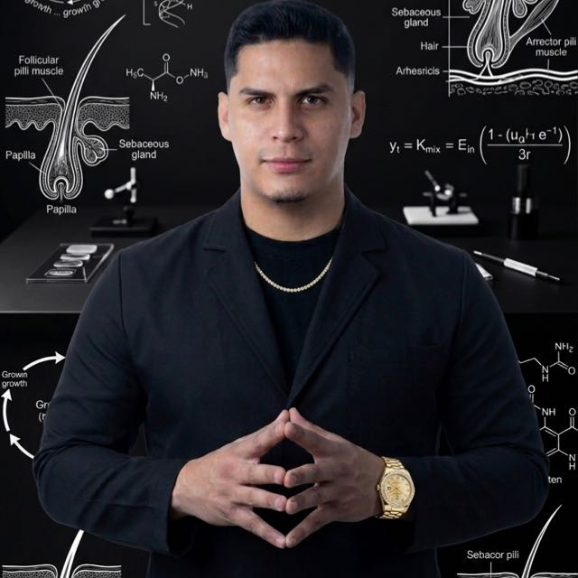

Con tu kit
Video 1 · La charla
La ciencia del cabello, explicada para barberos
Qué es el folículo, cómo crece el cabello, qué hace el sebo y cómo leer lo que ves en el microscopio.
Tricología aplicada a la barbería
Un kit con microscopio digital, los productos que necesita cada cuero cabelludo y un curso virtual para que analices a tus clientes y les recomiendes con ciencia, no con intuición.

Qué es la tricología
La tricología estudia el cabello y el cuero cabelludo: cómo nace el folículo, cómo crece la fibra, qué hacen las glándulas sebáceas y qué cambia cuando algo no marcha bien.
En la barbería casi siempre se decide a ojo. Con un microscopio digital se decide con imagen: ves el estado real de la piel y del folículo, se lo muestras al cliente en pantalla y la recomendación deja de ser una opinión.
cabellos tiene, en promedio, un cuero cabelludo adulto.
crece el cabello al mes, con un ritmo propio en cada persona.
recorre cada folículo: anágena, catágena y telógena.
Observa · Interpreta · Recomienda
Elige un hallazgo y mira cómo se ve en el campo del microscopio. Cada uno apunta a un tipo de producto distinto: así se arma el kit de cada cliente.
Imagen ilustrativa. El microscopio es una herramienta de observación para orientar el servicio y los productos; no diagnostica enfermedades. Ante señales persistentes, se deriva a un dermatólogo.
El kit
Observa el cuero cabelludo y la fibra del cabello en pantalla, con aumento, y muéstraselo al cliente en el momento.
Seleccionados según lo que ves: exceso de grasa, descamación, pérdida de densidad o sensibilidad.
Una charla para entender la ciencia y un video práctico para usar el microscopio con los materiales del kit.
Curso virtual
Qué es el folículo, cómo crece el cabello, qué hace el sebo y cómo leer lo que ves en el microscopio.
Paso a paso: cómo preparar al cliente, tomar la imagen, interpretarla y elegir el producto indicado.
Cómo funciona
Escríbenos, elige el kit y coordinamos el envío.
Entiendes la base de la tricología en un solo video.
Sigues el video de uso con los materiales del kit.
Observas a tu cliente y le entregas la solución que necesita.
Quién está detrás
Este proyecto nace de un programa que ya funciona en una barbería: cada cliente se analiza con microscopios digitales y el servicio se adapta a lo que su cuero cabelludo necesita.
El kit y el curso te entregan ese mismo método para que lo apliques en tu propio negocio, con las herramientas y los productos correctos desde el primer día.
Preguntas frecuentes
No. El curso parte de lo esencial y está pensado para barberos y estilistas que quieren sumar análisis a su servicio.
Dos videos: una charla con los fundamentos de la tricología y un video práctico que muestra cómo usar el microscopio con los materiales del kit.
No. Sirve para observar y orientar el servicio y la elección de productos. Si ves señales persistentes o preocupantes, lo correcto es derivar al cliente a un dermatólogo.
Sí. Después de ver la charla y seguir el video práctico puedes empezar a observar y a recomendar, y mejorar con la práctica.
Déjanos tus datos en el formulario de abajo y te escribimos por WhatsApp con el precio, la disponibilidad y las formas de pago.
Empieza hoy
Cuéntanos quién eres y qué te interesa. Te respondemos por WhatsApp con el detalle del kit.